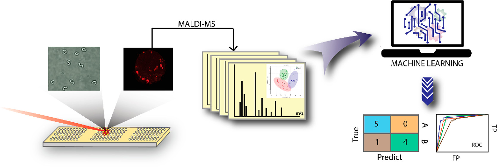
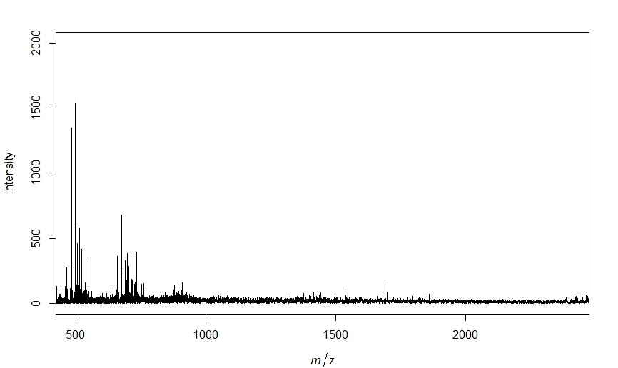
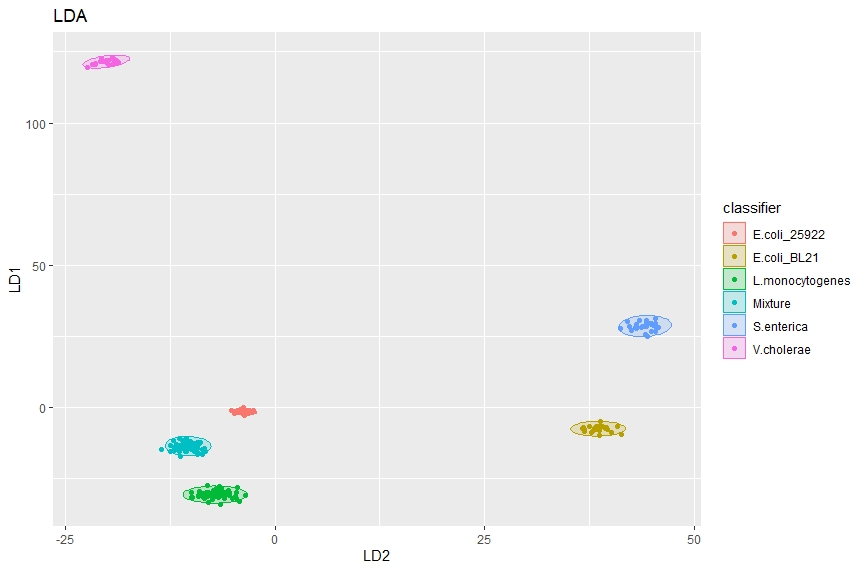

Processing and Machine Learning analysis of MALDI Spectra

Here I will give an overview of my code to analyze and combine many MALDI spectra as well as the machine learning and plotting tools I then apply to this processed mass spectrometry data.
First make sure all of the necessary packages are loaded and if not then download them.
# List of packages
packages = c("dplyr", "dummies", "rfUtilities", "caret", "R.utils", "pheatmap", "MALDIquantForeign", "MLeval", "MASS", "MALDIquant", "caretEnsemble", "corrplot", "readMzXmlData", "multiROC")
library(caret)
# Now load or install&load all
package.check <- lapply(
packages,
FUN = function(x) {
if (!require(x, character.only = TRUE)) {
install.packages(x, dependencies = TRUE)
library(x, character.only = TRUE)
}
}
)
For data split into folders labeled by their classifier (i.e bacterial species, herbicide treatment, etc.). I built a loop to run through each folder and pull in any mass spectra files, in this case .mzxml files. This also builds a classifier list to go with the mass spectra. This is important for the later machine learning algorithms that will be run.
for (x in 1:foldernum){
setwd("~/R/Spectra Analysis and ML/Place Data Here")
setwd(folders[x]) # changes working directory to next folder
directory <- list.files(pattern="*.mzxml", recursive = T) # pulls out spectra within selected folder
s1 <- importMzXml(directory)
outtest <- exists("s")
if(outtest == FALSE){
s <- s1 # combines all the pulled spectra together
classifier <- as.character(c(rep(classes[x], length(s1)))) # creates classifier table
}
s <- c(s,s1)
classifier1 <- as.character(c(rep(classes[x], length(s1)))) # creates classifer1 table as temporary store to append
classifier <- as.character(c(classifier, classifier1)) # combines class names from each iteration
}
Now that all of the spectra are pulled into R we can process the spectra, identify, peaks and get a matrix of peak intensities that match our chosen parameters. I also have it output a plot of one of the spectra just to make sure everything is working appropriately.
# Select mass range of interest
minmass <- 500
maxmass <- 2400
# Process and align all the spectra
spectra <- smoothIntensity(s, method="MovingAverage", halfWindowSize=2)
spectra <- removeBaseline(spectra, method="SNIP", iterations=100)
spectra <- alignSpectra(spectra, halfWindowSize=20, SNR=4, tolerance=0.002, warpingMethod="lowess")
plot(spectra[[1]], xlim=c(minmass, maxmass), ylim=c(0, 2000)) # plots the first spectra
spectra <- calibrateIntensity(spectra, method = "TIC") # normalize intensity
# Detect peaks for all spectra and plot result for first spectra
peaks <- detectPeaks(spectra, method="MAD", halfWindowSize=20, SNR=5)
# Equalize similar peaks, remove inconsistent peaks, combine into dataset of peak(m/z) and intensity
peaks <- binPeaks(peaks, method = "strict", tolerance=0.002)
peaks <- filterPeaks(peaks, minFrequency=0.1)
imatrix <- intensityMatrix(peaks, spectra)
# Keep only peaks between the min and maxmass
cols <- as.integer(colnames(imatrix))
col_to_keep <- cols > minmass & cols < maxmass
imatrix <- imatrix[,col_to_keep]

If you want to only look at peaks within a set m/z range you can remove any columns that are outside of this range. Then build a dataset from the mass spectra data and classifiers obtained in the beginning loop. Finally for use in machine learning algorithms we split our dataset into testing and validation sets. I use 70% for testing here but depending on the dataset size you have this can be modified. For example if you have a very large dataset a smaller percentage for validation would probably be acceptable while it would not be for a very small dataset.
# Keep only peaks between the min and maxmass
cols <- as.integer(colnames(imatrix))
col_to_keep <- cols > minmass & cols < maxmass
imatrix <- imatrix[,col_to_keep]
# Add classification column to dataset
dataset <- data.frame(imatrix, classifier, stringsAsFactors = TRUE)
datasetsave <- dataset
# Split data into training(dataset) and testing(validation)
validation_index <- createDataPartition(dataset$classifier, p=0.70, list=FALSE)
validation <- dataset[-validation_index,]
dataset <- dataset[validation_index,]
Now that the dataset is formualted and split into training and validation you can begin training your selected models. First I train a control to use 3 repeats of 10 fold cross validation in efforts to limit overtraining. Next I have selected random forest(rf), neural net(nnet), k nearest neighbor(knn), and linear discriminat analaysis(lda). More can be easily added based on your specific needs. I am using the Caret package which has over 200 available models so there are many options.
# Train control
control <- trainControl(method="repeatedcv", number=10, repeats=3, savePredictions = "final", classProbs = TRUE, index = createFolds(dataset$classifier, 10), allowParallel = TRUE)
# Set metric for model success, Kappa can be good for low % of samples in 1 class
metric <- "Accuracy"
# Train models of chosen type's
algorithms <- c("rf", "nnet", "kknn", "lda") # algorithms to be tested
model_list <- caretList(classifier~., data=dataset, metric=metric, trControl=control, methodList=algorithms)
Now that the models have been trained we probably want some figures and visualization of model sucess metrics. So I have built in a loop to save heatmap and correlation plots for each of the models we have trained.
for (methodname in algorithms){
# Predict testing data with chosen model
p <- predict(model_list[[methodname]], validation)
cm <- confusionMatrix(p, validation$classifier)
print(cm)
tryCatch({
# Output heatmap of prediction results
mat <- as.table(cm)
pdf(paste(methodname, "heatmap.pdf"), width = 7, height = 7, onefile = F) # saves results as a pdf of given name with given size (in inches)
map <- pheatmap(mat, cluster_rows = FALSE, cluster_cols = FALSE, display_numbers = TRUE, show_colnames = TRUE, show_rownames = TRUE, legend = TRUE, fontsize_number = 20)
dev.off()
# Output correlation plot of prediction results
co <- cor(mat)
pdf(paste(methodname, "correlation plot.pdf"), width = 7, height = 7, onefile = FALSE) # saves results as a pdf of given name with given size (in inches)
corrplot(co, method = "circle")
dev.off()
}, error=function(e){cat("EROR :", conditionMessage(e), "\n")})
}
# Outputs a pdf of important variables
pdf(paste("rf", "important variables.pdf"), width = 7, height = 7, onefile = FALSE)
impvar <- varImp(model_list[["rf"]], scale = TRUE)
plot(impvar, top = 20)
dev.off()
Here are a few examples of what these plots look like.


We can also use linear discriminate analysis to seperate classes, for example here we will be using lipidomic MALDI spectra of various bacteria species to differentiate species. First we train the model then plot the predicitions from that model to get a nice figure showing how effectively these classes can be seperated.
# Trains an LDA model using the whole data set
lda_model <- lda(classifier ~ ., data = datasetsave)
lda_predict <- predict(lda_model)
# Plots LDA results
ggplot(cbind(datasetsave, lda_predict$x),
aes(y = LD1, x = LD2, colour = classifier)) +
stat_ellipse(aes(fill = classifier), geom = "polygon", alpha = .2, level = 0.99) +
geom_point() +
ggtitle("LDA") +
theme(legend.position = "right")

There are more dimensions to LDA data as such a three dimensional plot can also be made by pulling out the top 3 linear discriminants and plotting them.
# Plotting with plotly
library(plotly)
# Setting up lda data for plotly
lda_data <- cbind(datasetsave, lda_predict$x)
LD1 <- lda_data$LD1
LD2 <- lda_data$LD2
LD3 <- lda_data$LD3
class <- lda_data$classifier
lda_dat <- data.frame(LD1, LD2, LD3, class, stringsasfactors = TRUE)
# Setting up plot properties
t1 <- list(
family = "Times New Roman",
size = 24,
color = "black"
)
t2 <- list(
family = "Times New Roman",
size = 18,
color = "black")
# Set up the axis variable labels
axx <- list(title = "LD2")
axy <- list(title = "LD1")
axz <- list(title = "LD3")
# Plotly figure
fig <- plot_ly(lda_dat, x = LD2, y = LD1, z = LD3, type="scatter3d", mode="markers", color=classifier, size=3)%>%
layout(title = list(text = "Bacterial Species LDA", font = t1, y = 0.95), scene = list(xaxis=axx,yaxis=axy,zaxis=axz), legend = list(title = list(text = "Species"), font = t2))
# Plot
fig
An interactive version of this 3D plot can be found by clicking on the plot or here.